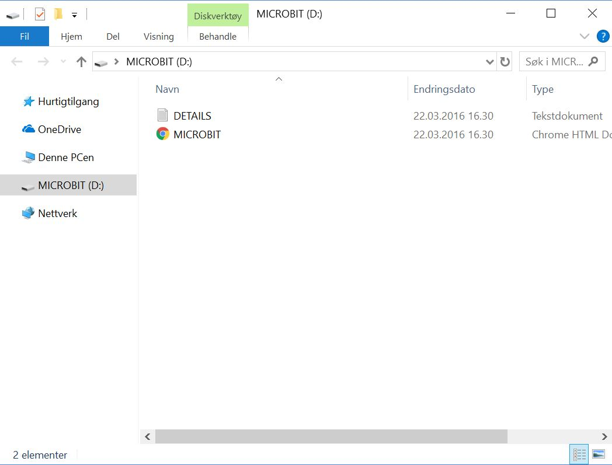

Lær Å Programmere
Om Micro:Bit
Micro:bit er en programmerbar chip som er utviklet av BBC. Chippen har mye forskjellig av funksjonalitet som du kommer til å utforske, blant annet 25 LED lyspærer og 2 programmerbare knapper. Programmeringen av chippen blir gjort i enten Micro:bit sin egen versjon av javascript, eller via visuelle blokker. All programmeringen du kommer til å utføre kommer til å bli gjort i en egen nettbasert “editor”.
Om Editoren
En editor er et program som er laget for å kunne skrive, se gjennom, redigere og gi funksjonalitet til kode. Editoren til Micro:bit ligger er nettbasert, som betyr at den ligger på en nettside. For å komme til å editoren må du først koble micro:bit chippen opp mot pc-en din. Dette gjør du via en USB kabel. Da du kobler inn chippen bør dette vinduet automatisk komme opp.

Her ligger informasjon om chippen, samt en link til Micro:bit sitt nettsted. Trykker du på “MICROBIT” linken skal du komme inn på en slik nettside:
Dette er micro:bit sitt eget nettsted. Her finnes det mye mer informasjon om chippen, og det er også mulig å kjøpe egne chipper eller ekstra utstyr. Ønsker du at siden er på et annet språk kan dette også endres øverst til høyre der det nå står “English”. For å komme videre til editoren må du trykke deg videre inn på “Let’s Code”.

Her finner du mer informasjon om editoren, samt annen informasjon om hvordan man programmerer chippen. Delen som tar deg videre til editoren heter “MakeCode Editor”, så scroll ned til delen som ser slik ut:

Den oransje knappen “Let’s Code” tar deg til editoren. Knappen “Reference” gir informasjon om forskjellige blokker og temaer, men knappen “Lessons” tar deg til egne leksjoner laget av micro:bit utviklerne. Trykk på den oransje knappen for å komme fram til dette:

Her finner du prosjektene dine. Nettsiden bruker cookies til å lagre tidligere arbeid du har gjort. Du kan derfor velge å fortsette på ting du har jobbet på tidligere, eller lage noe helt nytt herfra. Trykk på “New Project” knappen med det store plusstegnet på for å lage et helt nytt prosjekt.

Nå har du kommet fram til selve editoren. Det er her du kommer til å utføre alle oppgavene i micro:bit fremover. Øverst i midten kan du velge om du vil programmere i javascript, altså tekst, eller “blocks” som da er visuelt. Hva du skal bruke kommer an på hvilke oppgaver du utfører. Helt til venstre ser du en nettbasert micro:bit. Via denne kan du teste ut koden før du laster den ned til chippen din. Til høyre for for den ser du alle de forskjellige kode delene. I de forskjellige undermenyene finner du de forskjellige blokkene som utgjør funksjonaliteten til chippen. Innen du er ferdig med del 1 bør du være kjent med alle delene, bortsett fra “Music” og “Radio”. I høyre halvdel av vinduet ser du hvor blokkene skal være. Blokkene som du drar inn i den delen kommer til å bli tatt med i programmene du lager, det er der du kommer til å programmere. Ønsker du å gi navn på programmet ditt kan du gjøre dette ved å trykke der det står “Untitled”, nederst på siden. Da kan du skrive inn et eget navn på prosjektet. Når programmet ditt er ferdig så trykker du på den store lilla knappen nederst til venstre, den det står “Download” på. Da lastes ned programmet ditt til pc-en din, og derfra setter du programmet inn i chippen. Spør gjerne assistentene om hjelp hvis du sliter med dette, eller noe annet relatert til oppgavene.
Da bør du være klar for å programmere micro:bit chipper. Lykke til!